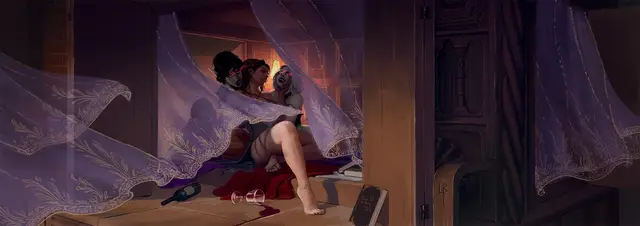

Посвящённый вампира
Vampire Devotee

Характеристики Сила, Телосложение, Харизма
Черта Игрушка вампира
Навыки Скрытность, Убеждение
Инструменты Инструменты повара
Снаряжение Выберите А или Б: (А) Инструменты повара, Отличная одежда, 2 Стеклянных бутылки, Комплект целителя, Духи, Лампа, 3 фляги Масла, Бурдюк, 19 ЗМ; или (Б) 50 ЗМ
Вы были в услужении у вампира, или у нескольких, обитающих вместе. Вашу кровь пили бессчётное количество раз. Может быть, вы служили добровольно, возможно — в надежде однажды самому стать вампиром; может быть, вас очаровали магией, и теперь ваша память удерживает только несколько смутных воспоминании о времени, проведённом как служка вампира. Так или иначе, теперь ваше пребывание в логове вампира окончено.